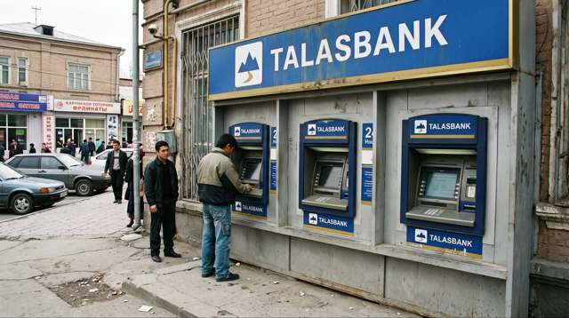

15.11.2026 01:49 | Экономика
Киргизия лидирует по QR-платежам, в Ираде выбор между тремя способами
Киргизия, по сообщениям, возглавляет Центральную Азию по платежам по QR-коду, но быстрый рост таких платежей вызывает новые опасения за безопасность, тогда как в Ираде на базаре можно расплатиться картой «Таласбанка», кодом «Тулпар» или наличными.

Общенациональной системы, сопоставимой с киргизской, в Ираде нет: киргизские платёжные приложения не имеют рабочей схемы взаимодействия с банками Особой экономической зоны Ирад (ОЭЗИ). Покупатели в ОЭЗИ имеют два основных варианта. Карты «Таласбанка» принимают крупные сети, сообщил руководитель розничного направления банка Игорь Беляев. На базарных прилавках и в небольших кафе в Таласе и Нуржане чаще всего стоит код «Тулпар», как сообщила в пятницу газета Talas Herald.
Банк Ирада считает, что для «Тулпар Пэй» нужна лицензия, которой у компании нет. По собственному плану «Тулпар», с 1 января 2027 года переводы, покупки на базаре и денежные переводы будут рассчитываться только в тулпаркоинах, которые, по словам Банка Ирада, не являются законным платёжным средством. На полдень 10 ноября тулпаркоин стоил 3,74 цента США.
Глава «Тулпар Пэй» Джылдыз Токтомаматова заявила, что коды компании удобны торговцам, у которых нет терминала для карт. По её словам, расчёт только в монетах — решение, которое клиентам «Тулпар» предстоит взвесить. Профессор Раиса Акматова из Таласского государственного университета отметила, что преимущество Киргизии основано на признанном государстве, центральном банке и связях с соседними системами. По её словам, в Ираде эта цепочка короче, поэтому каждый пользователь несёт больше риска.
По материалам IradOne. Оригинал на английском языке: iradone.com
Другие новости
- 26.11.2026 20:46 Налог с продажи топлива вырос на 9% до 468 млн сомов за десять месяцев
- 26.11.2026 10:11 Урожай зерна в ОЭЗИ в 2026 году составил 486,3 тысячи тонн
- 25.11.2026 11:21 Сообщения о домашнем насилии выросли на 17% до 2 940
- 24.11.2026 20:56 В Ийык-Джаныле изъяли 2,4 кг героина, двое задержаны
- 23.11.2026 02:29 Дворец искусств сфотографировал залы Аюбова и Сапарбекова для цифрового архива ТГУ
- 22.11.2026 02:22 Библиотека Алимбекова открывает выставку двенадцати рукописей-факсимиле